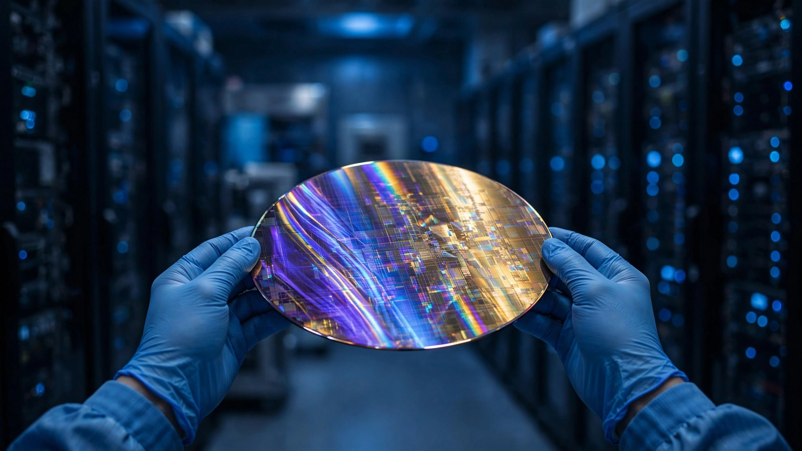

OpenAI Designed Jalapeño in 9 Months. Google Took 3 Years for TPU. The 20 Engineers Who Built Both Explain the Difference.
At an estimated $475 million in development cost and $1.25 billion in projected annual inference savings, the chip pays for itself in under 5 months. But five of the six largest AI compute consumers now depend on a single chip design house to escape Nvidia. Every flight from one monopoly runs through another.

Nine months.
That is how long it took OpenAI to go from a blank schematic to engineering samples of Jalapeño, its first custom AI chip, running GPT-5.3-Codex-Spark at production target frequency and power in the lab. When Reuters first reported the Broadcom partnership in October 2025, the conventional wisdom held that a first-generation ASIC from a company with no silicon history would take two to three years to reach tape-out, consistent with what every other hyperscaler had experienced, consistent with everything anyone in the semiconductor industry had ever seen from a first-timer, and consistent with the physics of how chip design programs actually work when the team has never been through one before. OpenAI finished before the fiscal year turned over.
Google's TPU v1, the chip that proved custom AI silicon was viable, took approximately three years from internal project start around 2013 to its public announcement in May 2016. Amazon's Inferentia: about two and a half years. Microsoft's Maia 100 had one of the more troubled timelines, starting around 2019 and not shipping until late 2023, a four-year slog that saw team turnover, architecture pivots, and the kind of silicon-debug delays that make program managers develop nervous habits. Industry average for a first-generation custom AI accelerator: three years.
Jalapeño took nine months, a gap that demands explanation.
The Three Factors Nobody Combined
Three discrete causes explain the acceleration, and the important thing is that none of them alone explains the gap. All three compounded simultaneously, and that is what matters.
First, OpenAI used its own AI models to accelerate portions of the chip design process. OpenAI has been explicit about this: chip design involves enormous amounts of routing optimization, floorplanning, and timing closure, the sort of computationally intensive but structurally repetitive engineering that large language models can meaningfully accelerate by exploring solution spaces faster than any human team could manually iterate through, eliminating weeks of trial-and-error in physical design verification, and catching timing violations that would otherwise surface only in post-silicon validation. This is the first documented case of a production-scale AI accelerator whose own design was substantially assisted by the class of AI it was built to run. The recursion is real.
Second, Broadcom. Broadcom has been building custom AI silicon for hyperscalers for over a decade. It designed Google's TPUs (a relationship committed through 2031), contributed to Meta's MTIA accelerator, and now Jalapeño. Each engagement deepens Broadcom's internal ASIC design library for AI workloads: verified IP blocks, validated interconnect topologies, proven memory controller architectures, lessons about which thermal profiles actually survive in hyperscale data centers and which look good on paper but fail at volume. When OpenAI walked in with a specification for an inference-optimized LLM processor, Broadcom did not start from scratch. They started from Google's finish line.
Third: people. OpenAI's chip team of roughly 20 engineers is led by Thomas Norrie and Richard Ho, who previously led the architecture of Google's Tensor Processing Units. Not "worked on." Led. These are the engineers who designed the architecture that proved custom AI silicon was commercially viable, and then they left Google and took everything they knew with them, which is legal and common and exactly the kind of human capital transfer that accelerates entire industries. Combined with Broadcom, which built TPUs from the foundry side, the Jalapeño team started its first day with more accumulated custom AI silicon experience than any team in the industry except Google's own.
The Break-Even Math
Here is a calculation nobody has published, and it is rough, reliant on analyst estimates and vendor claims, and possibly wrong. But the magnitude is so large that even substantial errors in the inputs do not change the conclusion.
Jalapeño is built on TSMC's 3nm process with an approximately 840mm² compute die and eight HBM3e memory stacks on a silicon interposer, according to technical details reported by ByteIota. A 3nm tape-out at this complexity typically costs $200 to $350 million for masks, wafers, and initial production runs, based on published industry estimates for advanced nodes. Add Broadcom's non-recurring engineering fees for a complex ASIC design (historically $100 to $200 million for designs of this scale), OpenAI's internal team costs (20 engineers at roughly $500,000 loaded annual cost, for nine months: $7.5 million), and testing and packaging integration (approximately $50 million). Total estimated development cost: $350 to $600 million, with a midpoint around $475 million.
Now consider the other side of this ledger. OpenAI's annual compute expenditure is estimated at $4 to $5 billion by analysts at Goldman Sachs and Morgan Stanley, based on Azure usage patterns and Microsoft's disclosed AI infrastructure spending. As OpenAI's product portfolio shifts toward serving hundreds of millions of users through ChatGPT, Codex, and agentic APIs, inference represents a growing share of total compute. At a conservative 50% inference share, that is $2 to $2.5 billion annually spent on running trained models. Broadcom CEO Hock Tan told Reuters that Jalapeño delivers roughly 50% cost savings per inference token compared to current GPU setups.
Apply Tan's claim to OpenAI's estimated inference spend: 50% of $2.25 billion (midpoint) yields $1.125 billion in annual savings. Divide $475 million by $1.125 billion, and break-even arrives at 5.1 months. Not years. Months.
Even under pessimistic assumptions, the math works. Assume development cost at the high end ($600 million), inference share at only 40% of a lower $4 billion total spend ($1.6 billion), and actual cost savings at only 30% instead of the claimed 50%, because vendor claims in semiconductors have a long and colorful history of not surviving contact with production reality. That gives $480 million in annual savings and a 15-month payback. Under the best-case assumptions, break-even arrives before the next iPhone launch. Under the worst case, it arrives before the next presidential inauguration.
This is why every major AI lab is doing it.
The Broadcom Problem
Which brings us to the concentration risk nobody talks about.
As of Broadcom's Q1 FY2026 earnings call, the company's confirmed custom AI accelerator customers include Google, Meta, OpenAI, Anthropic, and Apple. Five companies. Five of the six largest AI compute consumers on Earth. All dependent on the same design house to build their escape route from Nvidia. Broadcom's AI semiconductor revenue hit $8.4 billion in a single quarter, growing 106% year over year, with gross margins of 78.6%, a number that exceeds Nvidia's approximately 73.5% and that should give pause to anyone who assumed the custom silicon revolution would also be a margin revolution.
Consider what that means: every company building custom silicon to reduce dependence on Nvidia's monopoly pricing is channeling its designs through a company that holds 70% or more of the custom AI accelerator design market. Broadcom's CEO has publicly stated a target of $100 billion in annual AI chip revenue by fiscal 2027, backed by $73 billion in committed customer backlog. Arms dealer is the wrong metaphor; Broadcom is the only gunsmith in town, and every army just placed an order.
| Company | Chip | Design Partner | Est. Inference Savings vs GPU | Scale (mid-2026) |
|---|---|---|---|---|
| TPU v7 Ironwood | Broadcom | ~65–67% | 10,000+ chip clusters | |
| Amazon | Trainium2 | Marvell | ~50% | 500,000+ deployed |
| Microsoft | Maia 200 | Marvell | ~30% (internal est.) | 70% Azure AI on Nvidia |
| Meta | MTIA v2 | Internal / Broadcom | Internal est. | Recsys workloads |
| OpenAI | Jalapeño | Broadcom | ~50% (claimed) | Engineering samples |
Marvell occupies the secondary position, handling Amazon's Trainium and Microsoft's Maia, with roughly 20 to 25% market share. Two companies control virtually all custom AI silicon design services. The industry escaped a GPU monopoly and landed in an ASIC duopoly, which is an improvement only if you believe that having two suppliers instead of one changes the structural dynamics of a market where switching costs involve multi-hundred-million-dollar tape-outs and two-year redesign cycles.
The Strongest Case Against
Custom silicon is an enormous bet that your current model architecture persists. Jalapeño is designed around the specific computational patterns of autoregressive transformer inference: attention mechanisms, key-value caching, the particular matrix shapes that LLMs use during token generation. Its systolic array architecture is tuned for memory-bandwidth-limited workloads where data movement is the bottleneck. Beautiful. Efficient. Frozen.
If OpenAI's own research produces a fundamentally different architecture, the chip becomes expensive scrap. Mixture-of-experts at extreme sparsity would change the compute profile completely, turning a memory-bandwidth bottleneck into a routing bottleneck that Jalapeño's systolic arrays cannot help with. Non-autoregressive generation would eliminate the sequential token-by-token inference pattern the chip was purpose-built to optimize. Google learned this lesson with TPU v1, which was designed for specific tensor operations and then had to be significantly rearchitected for v2 when transformers arrived and rewrote the rules of what "AI workload" meant. GPUs are stupid, but they are also flexible. ASICs are brilliant at exactly one thing. The gamble is that "one thing" stays dominant long enough to compound.
Limitations of This Analysis
OpenAI does not disclose its annual compute expenditure. That $4 to $5 billion figure used here comes from analyst models, not audited financials. The "50% cost savings" claim originates from Broadcom's CEO in a Reuters interview and has not been independently verified through published benchmarks, specified workloads, or third-party testing. The ASIC development cost of $475 million is my estimate based on industry benchmarks for 3nm tape-outs; actual costs could differ significantly. The "9 months" measures design start to engineering samples, not to volume production deployment, which is scheduled for late 2026 and represents a roughly 15-month total cycle from design to production. The timeline comparisons across companies are imperfect because each chip had different design complexity, team sizes, and starting knowledge bases.
The Bottom Line
Renting Nvidia's silicon is ending for the companies that can afford to build their own. Building just got 4× faster in calendar time. At Jalapeño's estimated economics, every dollar OpenAI spends on chip development returns roughly $2.40 in annual inference savings, a return that would make any venture capitalist weep, and that is assuming the vendor's cost claims survive contact with production, which historically they do not fully do.
If you run AI inference at scale, the playbook is now clear: hire Broadcom or Marvell, recruit someone who built a previous generation of custom silicon (there are maybe 200 people on Earth with the right experience, and most of them are already employed by someone on the table above), let your own AI models accelerate the design process, and expect 9 to 15 months to first silicon with break-even within a year. If you are a smaller AI lab that cannot justify custom silicon because your inference spend falls below roughly $500 million annually, your advantage is different: the hyperscalers will pass their cost savings through as lower API prices, not out of generosity but because they are competing with each other. Watch inference pricing on Google Cloud, AWS, and Azure over the next 18 months. Prices will fall, and that part is certain. The only question is whether the companies cutting prices on Jalapeño and TPU v7 are cutting into Nvidia's revenue, or just building a bigger moat around their own.